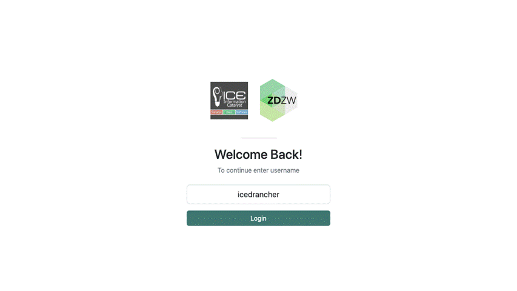

Kubernetes Platform
General Description
This solution provides the key infrastructure where the ZDZW solutions are deployed and integrated. The Kubernetes Platform as per its descriptive name, is based on Kubernetes and Containers technologies.
Containers have quickly become the standard for application deployment. Containers are units of software that package up code and all dependencies so that an application is able to run quickly and reliably in various computing environments, from OnPremise to OnCloud to Edge deployments.
Kubernetes is the leading container orchestration technology and has become the de facto standard for container orchestration. Kubernetes is a portable, extensible, open-source platform for managing containerized workloads. It facilitates declarative configuration and automation, takes care of scaling and failing over applications, provides deployment patterns, and more.
The Kubernetes Platform is a pre-packaged Kubernetes bundle, based on Kubernetes K3s, with several other tools to provide a fully featured production ready Kubernetes environment, such as:
- K3s: the lightweight Kubernetes, is a fully compliant Kubernetes distribution, easy to install, half the memory, all in a binary of less than 100 MB among other enhancements
- Rancher: Kubernetes cluster management tool with a user friendly UI
- Helm: the package manager for Kubernetes. The ZDZW solutions will be packaged using Helm charts
- Ingress Controller: the entry point for the cluster through the applications URLs using HTTP/HTTPS or TCP
- Service Mesh: transparent layer for enhanced connectivity, security, control and observability in the cluster
- Kubernetes Storage: provide the Kubernetes native storage for the stateful applications
The Platform can be installed on-Cloud, on-Prem and on the Edge, providing great flexibility for the different ZDZW solutions needs. Within the scope of the project, there is the possibility to create a prototype of a Hardware box for Edge and on-Prem installation and connectivity with the cloud platform.
Top Ten Functionalities
- Installation Process: The Platform provides a user friendly installation process for easy installation to non-experienced users. In any case, management of the platform itself, will require some expertise.
- Flexibitlity of installation modes: supports different installation modes from on-cloud to on-prem and edge
- Development installation: The suite provides a development version of the platform so-called miniZDZW for ZDZW solutions developers to be able to test deployment of the apps in a development environment
- Platform Scalability: grows in resources as needed, i.e. add additional nodes
- Management Interface: provides a user friendly UI for cluster management. Management of the platform itself will require some expertise
- Management of Apps: provides the interface and API to manage apps in the platform : deployment, deletion, upgrade
- Monitoring of Platfom and Apps: provides the interface and API to monitor the platform itself and the apps running in the platform
- App Packaging – Helm Charts: provides the app packaging in the form of Helm charts for repeatable deployments. Provides platform side configuration to be applied during deployment of the apps
- Base Charts Engine: provides a cli to automatically create the application Helm chart based on base charts defined by operations or devops teams
- Networking-Connectivity: provides secure networking and connectivity among the installed apps and to and from outside the cluster
- Log management: ability to retrieve application logs for troubleshooting and debugging
- Native Storage: provide Kubernetes native storage for stateful applications
Architecture Diagram
This Figure represents a high level architecture diagram of the ZDZW Kubernetes Platform.

The ZDZW Platform solution has the following components:
-
Kubernetes: leading technology in container orchestration, key component that manages the deployment and integration of ZDZW applications. The current distribution used is K3s, which is a lightweight version of Kubernetes as described above. One of the main advantages of using the K3s distribution is that the same technology can be used to install a large OnCloud Kubernetes cluster, or a single node cluster deployed on the edge. The current Kubernetes version installed is 1.26 which is the most up to date version compatible with Rancher
-
Management UI - API: open source software mainly based on Rancher that allows to deploy and manage Kubernetes clusters in a more user-friendly way both on-premise and on-cloud. The Rancher application will provide not only the management interface for platform administrators but also the app installation interface and API integration for ZDZW users. The current Rancher version being used is 2.7.9
-
ServiceMesh – Ingress Controller: allows to add transparently a layer to provide the platform with enhanced connectivity, security, control and observability. It uses a sidecar container deployed along the application container to provide the service mesh features. This service mesh also allows for connectivity between distributed clusters, such as on-prem to on-cloud. The Service Mesh is not yet installed in the current ZDZW Platform, and nginx ingress controller version is being used, but will be installed in the next iteration of the platform
-
Gateway - Ingress: provides the entry point to the cluster and the service mesh for all network traffic. It exposes the applications through the internet. The current ingress resource is based on nginx ingress controller, and will likely evolve to ServiceMesh Gateway when the ServiceMesh is installed
-
Monitoring UI-API: open source software mainly based on Prometheus + Grafana, provides the monitoring interface for the cluster and the ZDZW applications. It may provide also an interaction with the ZDZW usage traceability. Prometheus and Grafana have not beeen installed yet in the platform and the Rancher monitoring capabilities are being used
-
Storage Management: provides the interface between Kubernetes and the physical storage, i.e. NFS controller, EBS controller … At the moment, the current setup is using local storage for apps but this will change in future iterations of the platform where NFS and/or Kubernetes native storage will be used
-
CertManager: provides management of SSL certificates for secure connectivity ie. HTTPS, with verified signed certificates using Let’s Encrypt. Cert-manager version is being used. The current certificates are self-signed since in this iteration no application is being exposed to internet. This will change in the next iteration of the platform, where Let's Encrypt signed certificates will be created for the applications
Image Overview

Hardware Components
The current ZDZW Cloud platform is runing in Ascens cloud vendor using three Ubuntu 20 VMs with the requirements detailed in the next section. The Hardware details in this case are not required since provided by cloud vendor.
Computation Requirements
For the development installation of the platform or edge deployment (minizdzw), these are the minimum requirements. This can be increased depending on the number of ZDZW solutions to be deployed:
- 4 CPUs
- 6-8 GB RAM
- 32 GB Storage
For a private OnCloud/OnPrem deployment of the platform a minimum of three nodes cluster is recomended with requirements similar to the ones in the current ZDZW Cloud Platform:
-
Master Node
- 8 CPUs
- 8 GB RAM
- 64 GB Storage
-
Two Worker Nodes each with
- 8 CPUs
- 16 GB RAM
- 256 GB Storage
Installation Procedure
There are two different setups, one for development or edge deployment named after miniZDZW which is just a single node cluster version of the actual platform, and fully featured Kubernetes Platform.
-
miniZDZW
This is a tool to install a single node cluster version of ZDZW Kubernetes Platform. The user just needs to run a single script and this will install and configure all the required tools.-
Clone the repository
-
Navigate to minizdzw folder
-
Run minizdzw
where ip is the ip of the node where running the script and iface is the network interface of the ip. The script will install and configure all the required tools for miniZDZW platform to run. That is:
- Docker
- K3s (Kubernetes)
- Helm
- Cert-manager
- Rancher
- Creates a self signed certificate to use by the ingress controller
- Nginx Ingress Controller
- nginx docker (load balancer)
-
Once the script has successfully installed miniZDZW, access the Rancher URL at https://rancher.minizdzw.$nodeip.sslip.io, which is the default domain used during the installation. Enter the default admin password set by default to "admin" and create a new admin password. Start managing the Kubernetes cluster and apps using the Rancher UI. In the "How To Use" section there will be detailed instructions on how to use and perform the key management actions of the Kubernetes platform
-
-
Kubernetes Platform Installation Kit
An installer for the Kubernetes Platform called Installation Kit has been developed. The idea is to allow non experienced users to deploy the platform along with a fully featured Kubernetes cluster, with all tools installed and configured. The ZDZW Installation Kit will run as a docker container on an installation node or even on a local laptop and will install the platform in the remote nodes. The Installation Kit allows the user to configure and customize the installation process using some forms via browser and will run Ansible playbooks on the backend in order to effectively install the platform.
The main steps to install the Kubernetes Platform are:
-
Run the Installation Kit image
-
Navigate to your local browser at http://127.0.0.1
- Enter the user to be used for installation, by default icedrancher
- Download the create_user.sh script and run it manually on the nodes where the platform will be installed. This script will create the installation user in each platform node and distribute the ssh keys in order to be able to run the commands from the installation node. Clik the "Next" button once the script has been run in all nodes
- Fill in all the forms with the required cluster info
- 1 Basic Options: enter the cluster name
- 2 Load Balancer Options: enable an external nginx load balancer option if you don't have a load balancer. Enter the ip of the node where the nginx loadbalancer will be installed.
- 3 K3s Options: enter the details of the nodes where the cluster will be installed. Click on add in order to add a new node. In the pop up dialogue enter the Node Type (master or worker), the IP and the network interface. You have to create at least one master node and an odd number of them.
- 4 Rancher options: select whether to use the same domain for Rancher than the applications one
- 5 Confirmation: review the options selected and click on the Install button. The installation will start. Once installation is successfull click on Done button and the cluster is installed. You can now navigate to the Rancher UI.
-
How To Use
This section provides the steps not only on how to use the Kubernetes Platform and the Rancher UI but also instructions on how to prepare the Helm Charts for the platform.
-
Kubernetes Platform
Once the ZDZW Kubernetes Platform has been installed and the Rancher UI can be accessed as show in section "Installation Procedure", these key management actions can be performed:
-
Inspect the cluster and check number of nodes, resources, etc Ref to snapshot
-
A user can register a catalog or repository in order to be able to deploy apps from that catalog. A catalog is just a repository, git or helm, where helm charts are stored. Rancher has already some default catalogs registered. In order to create the new one, navigate to the cluster, apps, repositories, and click on the "Add Catalog" button. Fill in the form with the credentials for a private repository and click "Create". The Catalog is added to Rancher and the apps will be displayed in the Apps view Ref to snapshot
-
Applications can be deployed from the registered Catalog. Navigate to the Apps section where the list of deployed apps is displayed. Click on Launch button. The list of available apps is displayed. Select the app to be deployed, fill in the configuration form and click on Install. The application will be deployed to the platform. Ref to snapshot
-
Inspect the application and logs.
-
Delete applications
For more detailed description on these steps, refer to Additional Learning Materials, the Rancher documentation.
-
-
Helm Charts
Helm is the package manager for Kubernetes. It helps you manage Kubernetes applications by combining the different Kubernetes resources an application is composed of in a single package, the Helm Chart, that you can create, share, version, publish, install, upgrade and delete. It also provides templating functionality so that different values can be configured for an application.
But creating a Helm Chart and the Kubernetes resources is not an easy task since it requires some Kubernetes knowledge. For that reason the Kubernetes Platform provides a base or template Helm Chart to be imported as a subchart in an application chart.
The idea is that developers creating zwApps can re-use this base chart as many times as per the number of modules in their zwApp, i.e. frontend, backend, without any knowledge of Kubernetes related stuff, and only having to override a set of values.
The base chart includes the following resources pre-configured to be re-used out of the box:
- A deployment
- A service
- An ingress
- A persistent volume and persistent volume claim
- A service account
- A registry secret
- A pre-configured set of values in values.yaml
With this, developers just need to include the base chart in their chart folder, and override some values depending on apps needs, that is just having to update a single yaml file vs creating all Kubernetes related resources yaml files, thus simplifying developers integration with Kubernetes and the Kubernetes learning curve.
These are the detailed step by step instructions in order to use the base Helm Chart. We will refer to the base chart as zapp-base and to the zwapp chart as zwapp:
-
Create a helm chart using helm cli
where zwapp is the name of the chart to be created
-
Remove non-required folders and files
-
Copy the base helm chart to the zwapp charts subfolder with a different name i.e. zmodule1, and replace the Chart.yaml name accordingly. Copy the base helm chart values.yaml to the zwapp values
-
Edit the zwapp values in order to leave only the variables you need to override. Add the reference to the subchart name (the base chart) and ident all related values to the right. This is an example of a values file in order to override the app related values
-
Add an optional configmap if you need to include zwapp related env variables to be set. For this, you can set the values app.env to true (default). Then add in the zwapp/templates folder a configmap with the name $appname-configmap.yaml, where $appname is the name of the app in the values variable app.name. This is an example of a configmap
For additional instructions and examples see ZDZW Integration and Helm Chart links at Additional Learning Materials section.
Additional Learning Materials
Kubernetes https://v1-26.docs.kubernetes.io/docs/home/
Helm https://helm.sh/
K3s https://k3s.io/
Rancher https://ranchermanager.docs.rancher.com/v2.7/getting-started/quick-start-guides
Integration https://github.com/zdzw-eu/integration/tree/main